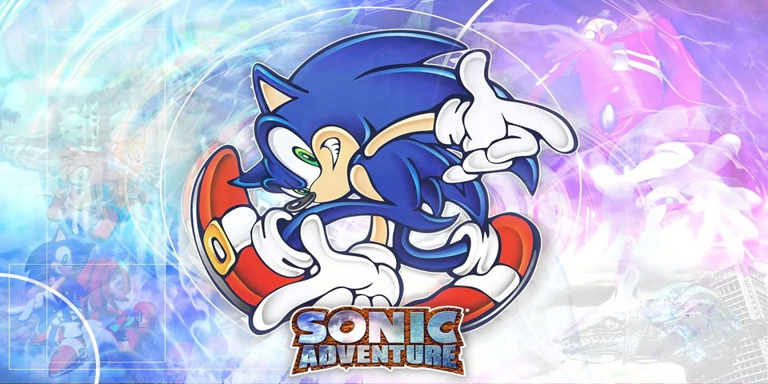
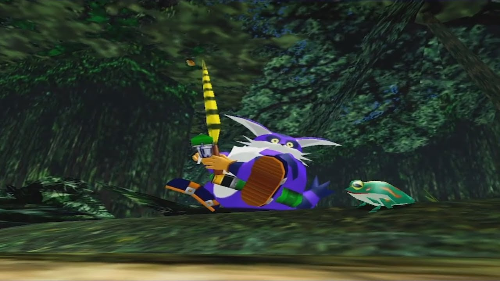
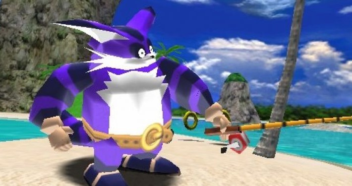
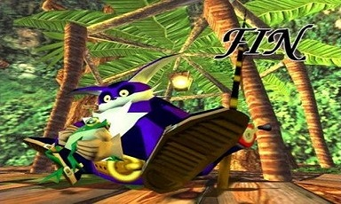

SADX - Campanha do Big
É noite em Mystic Ruins, e do céu cai algo brilhante. No meio da floresta, Big e Froggy estão dormindo. Porém o sapo acorda e vai verificar o que caiu do céu e uma poça d'água que o ataca. Big acorda e vê que Froggy está estranho. O sapo agora tem uma cauda. Froggy pega o amuleto da sorte de Big, a Chaos Emerald amarela, e sai correndo. Big vai atrás dele.
Ao chegar em Station Square, vá até os esgotos localizados atrás de Twinkle Park para pegar o Lure Powerup. Isto ajudará a pegar peixes maiores. Vá para a área da prefeitura e Big encontra Froggy, mas ele escapa para o esgoto por baixo de um carro. Levante o carro e vá para o esgoto, vire para a direita e siga em frente. Você sairá na Twinkle Park. É só seguir em frente para acessar a fase.
Stage 01 - Twinkle Park
Se você chegou até aqui, meus pêsames, essa campanha é bem chata. Todas as missões de Big consistem em achar e pescar Froggy. Nesta primeira fase você irá pescar na piscina que fica logo a sua frente. Jogue a vara de pesca perto de Froggy e a recolha lentamente para chamar sua atenção. Quando Froggy a morder, mecha-a para mante-lo nela, e depois a recolha lentamente, capture-o e termine a fase.
Como a campanha não pode acabar tão rapido com uma unica fase, Froggy rapidamente ja foge das mãos de Big. Saia de Twinkle Park e vá em direção para a parte de trás da entrada. Pega a Pedra de Gelo e vá para Mystic Ruins. Quando chegar em Mystic Ruins, vá em direção a floresta tropical. Há uma caverna próxima ao homem que diz que deixou sua mulher em Station Square. Para achar a caverna, vá pelo caminho mais a direita no início, siga em frente, até você achar o homem e a caverna e pegar o segundo Lure Powerup. Agora siga até a cabana de Big. Embaixo de sua cama está o Power Rod . Esta vara terá um alcance de captura maior. Agora volte para a estação e siga para Ice Cap. Quando entrar na caverna de gelo, você verá o item Life Belt. Isto fará Big flutuar e poder nadar debaixo d'água. Suba a escada e entre na Icecap.
Stage 02 - Ice Cap
A pesca continua. Nessa fase há partes do gelo em que você deve quebrar, estas partes são mais escuras e você deve pular para quebrá-las e poder pescar. Froggy está logo no início, basta quebrar o gelo logo à frente. Mas antes de pescá-lo, afunde na água e ache uma passagem. Você sairá em uma outra parte da fase. Ache uma ossada de dinossauro. Perto da parte da cabeça você achará outro Lure. Saia da caverna e Big encontrará Tails que está com Froggy. Big corre em direção a eles, mas tropeça e cai. Tails deixa Froggy escapar e Big sai atrás dele. Vá para a estação e para a Station Square. Chegando lá Big vê Froggy no canteiro em frente ao hotel e ele entra. Vá atrás dele e dentro do hotel e entre na fase Emerald Coast.
Stage 03 - Emerald Coast
Froggy esta à sua direita, perto do pilar aonde fica o farol. Fique ao lado do pilar. Deixe metade do corpo de Big dentro d'água. Esta é a maneira mais fácil de capturar Froggy. Depois que pescá-lo, só haverá mais uma fase, não se preocupe, ja está acabando.
Big finalmente conseguiu pegar Froggy, porém E-102 aparece e captura o sapo. Big o segue, pedindo que devolva o seu amigo. A Egg Carrier decola da base em Mystic Ruins e Big está a bordo. Ele sente o cheiro de Froggy, o que significa que ele está por perto. Vá até a prisão de Egg Carrier e você encontrará o último Lure Powerup. Agora volte e entre em Hot Shelter. Pise no botão e entre na porta do meio para entrar em Hot Shelter.
Stage 04 - Hot Shelter
Siga o caminho e passe a primeira parte com água. Você chegará em uma sala onde Big verá Froggy preso em um aquário. Aperte o botão para liberar a água e Froggy ficará a disposição para você pescá-lo agora. Big enfim pegou Froggy, porém uma luz gira ao redor dele e o leva para outro lugar. Siga reto e você encontrará Tikal, que finalmente entendeu o que sua vó falava. Big volta para Egg Carrier com Froggy. De repente uma chacoalhada total na Egg Carrier ocorre. Acione o monotrilho e entre nele. Você sairá na parte superior do Egg Carrier. Vá até a parte central. Big encontra Chaos 4 e Eggman. Eggman ordena que Chaos pegue o sapo que está com uma Chaos Emerald e o seu rabo. Froggy expele a esmeralda e Eggman manda uma outra para Chaos, que transforma-se em Chaos 6. Ele também pega Froggy e absorve a sua cauda. Sonic surge e diz a Big que ajudará a pegar o amigo.
Chaos 6
Se lembra de quando eu disse que essa campanha é horrivel? Pois bem, nem mesmo o boss final de campanha de Big é um boss, você apenas pesca Froggy de dentro de Chaos 6 e acabou. A mira vermelha dentro do Chaos 6 indica onde Froggy está. Primeiro preocupe-se em desviar dos ataques. Quando você sentir que tem uma chance tente pescar Froggy. Com Froggy em mãos, vá para a frente da Egg Carrier na direção do Tornado 2 e volte à Mystic Ruins. Ambos saem da Egg Carrier e pousam na floresta. Agora eles estão de volta ao seu lar e podem viver sua pacata vida como antes, sem pressa e apenas se divertindo em seu Paraíso Especial.
